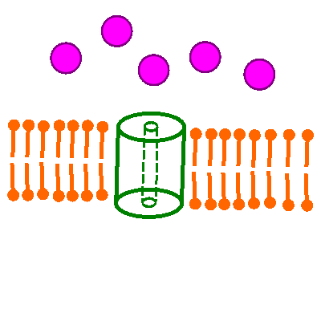

Bau der Axonmembran
Kanalproteine

Phospholipid-Doppelschicht der Axonmembran;
Kanalprotein;
Spezifische Ionensorte (gilt sowohl für die verschiedenen Metall-Kationen als auch für Anionen wie das Chloridion)
- Das hier dargestellt Kanalprotein ist im Ausgangzustand geschlossen.
Aufgrund einer elektrische Reizung (diese ankommende Spannungsänderung ist hier symbolisch als gelber Stern dargestellt)
öffnet sich der Ionenkanal für eine bestimmte Zeispanne.
- Die Konzentration der hier dargestellten Ionensorte ist hier extrazellulär (oben im Bild) anfänglich höher, daher findet die Diffusion ins Zellinnere anfangs bevorzugt statt.
- Vernachlässigt man das Ladungsgefälle, so würden sich die Konzentrationen außen und innen mit der Zeit ausgleichen, es würde sich ein dynamisches Gleichgewicht einstellen.
- Nach einiger Zeit schließt sich dieses Kanalprotein wieder, der Ausgangszustand mit der anfänglichen, weitaus ungleichmäßigeren Ionenverteilung, muss über einen anderen, aktiven Transportmechanismus wieder hergestellt werden, damit der Zyklus von neuem beginnen kann.
- An den nicht myelinisierten Abschnitten der Axonmembran befinden sich jeweils viele Tausend Kanalproteine der verschiedenen Sorten, es kommt also immer auf die statistische Häufigkeit (vgl. Verteilung/Wahrscheinlichkeit) der Kanalöffnung an, nicht auf einen einzigen Kanal, wie es hier vereinfacht dargestellt ist!
Externe Links
Membrantransport: Freie Diffusion
Natriumkanal
Kaliumkanal